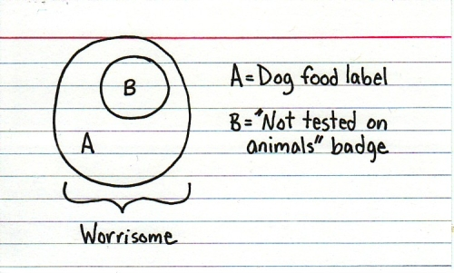
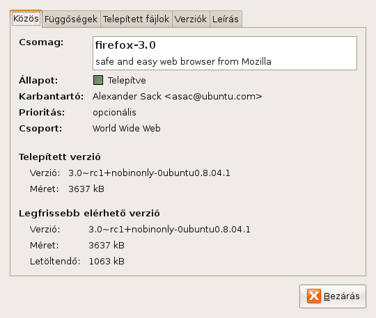
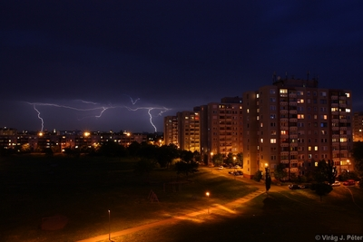

Alkalmatlan vagyok ara, hogy rendszeresen blogoljak. Nekem ez nem megy.
A Reader bejegyzések megosztása jobban bejön. Itt is vagyok.
Azért még lehet, hogy fogok írni, bennem van még pár poszt, csakhát a lustaság...

Alkalmatlan vagyok ara, hogy rendszeresen blogoljak. Nekem ez nem megy.
A Reader bejegyzések megosztása jobban bejön. Itt is vagyok.
Azért még lehet, hogy fogok írni, bennem van még pár poszt, csakhát a lustaság...
Szolgálati közlemény: alkalmi olvasóim közül páran megjegyezték, hogy tetszett, amit olvastak (persze, én se szólnám le a haverom blogját), csak épp túl sok zsíros hajú, szemüveges, répanadrágos kocka kifejezés tombol az első sorban, és nem lehet tőlük látni a színpadot rendesen. Engedve a népakaratnak innentől megpróbálok belőlük kevesebbet beengedni, viszont a hely jellege miatt ez olykor nehézségekbe fog ütközni. Rokkerkocsmába se megyünk ugye White Party cuccban.
Beindult tehát a CERN csodakütyüje. Harminc évnyi munka után elkészült végre a molekuláknak az ő eddigi legnagyobb játszóterük, ahol szaladgálhatnak, körözhetnek kedvükre (bár egyelőre némileg lagymatagon), és megmutathatják nekünk Gordon Freemant, az erős pistát az Őslevesben, valamint hogy most akkor A Tyúk Vagy A Tojás. És még a világot sem pusztította el, juhéjj.
Az viszont, hogy (még) nem sikerült lehúznunk magunkat egy önnön nagyszerűségünk által létrehozott fekete lyukba, önmagában még nem ok arra, hogy bejegyzést írjak róla, számomra sokkal nagyobb hírértékű dolgokról is elmulasztottam idehányni a gondolalatimat. Viszont hogy (úgy tűnik) megúsztunk egy ilyen bolygóméretű kataklizmát, ráébresztett arra, hogy az élet egyébb élvezetei mellett az amúgy mindenhol promózott blogomat sem ártana kirángatni a tespedés dögbűzös mocsarából.
Legalább a következő meteorig.
A kutyakaját meg nem teszteljük állatokon.

Olvasson mindenki Venn-diagrammokat az Indexed blogon! Bár nekem néha kicsit túl absztraktak....
Úgy, hogy írunk például egy ilyen termékismertetőt:
Essenek csak térdre a büdös-jobbágy-parasztjai, amikor ezt a tekintélyt parancsoló tokot a hónod alá csapva jársz-kelsz. MInt arisztokrata jómodod szimboluma, a Le Royale, a Crumpler Szent tehénkéinek bőréből készülő laptop tok, kielégíti a hedonista, nagyvonalú életmódod. A maga pazar gazdagságával méltóságteljessé teszi fenséges viselkedésed. Ki merészel a szemedbe nézni, mikor végig méred a birodalmad, fejedelmi fejtartásoddal mutatva. hogy te vagy az egy aki uralkodásra született. Ragyogó fenséged, reméljük alázatosan szolgálja majd. The Le Royal - az igazi bőr laptop tok a Crumplertől.
A termék iránti vágykeltés csiszolatlan, ipari gyémántjával állunk szemben.
Itt pedig még egy példa. Nézelődj, és tanulj, kutya!
...mert amugy ez az, amiről a Linux filozófia valamilyen szinten szól, nem?
Beraktam az imént egy tuti kis favicont abból a képből, amire az egész fejléc-téma épül. A kép, amelyre eddig nem fordítottam túl nagy figyelmet, pedig már blog fejlécként, faviconként, Gravatarként és IM buddy ikonként is alkalmazom. A kép a következő képet nem mutatjuk, mert úgy látszik nem igazán kedvelik. Shit. Ez csak egy link:

Ez a faszányos kis fejahllgatós Tux számos társával egyetemben a Tux Factory oldaláról húzható, ahová az alap Tux remixeként számos verziót feltöltöttek a lelkes próbálkozók.Az én kis kedvencemet Overlord59 követte el, örök hála neki!
A legtöbb ide feltöltött ilyen cucc GNU/GPL licencű, vagyis bárki bárhol bármire. Válasszon mindenki magának Tuxot!


A sebtiben megcsavart Tilbery dohányrúd hegyén apró parázs jelenik meg az öngyújtó táncoló lángsüvege nyomán. A szemlélődő inkább az erkély mélyére húzódva hallgatja az égiháborút, tudván, hogy ha szokásához híven kikönyökölne, a zuhatag azonmód eláztatná. Nem veszít semmit, a vízcseppek kopogása és az égzengés így is utat talál hozzá, a hűvös leveső símogató hullámaival egyetemben. A feszültségtől sistergő levegőből olykor Tharr pörölye csihol csipkés ívfényeket, melyek baljós lidércfénybe borítják a tájat, a nyomukban loholó moraj pedig öblös basszust szolgáltat a korlátra hulló esőcseppek monoton dobolásához. Impozáns összhatás.
Ahogy a szemlélődő tüdejébe utat talál a ki-tudja-hányadik cseresznyés füstpamacs, az egyik villám minden eddiginél közelebb hasít bele a zöldes árnyalatú égbolt már-már békés egyhangúságába. A szemlélődő csodálattal adózik a természet kaotikus ereje által létrehozott gótikus csodának, az ágas-bogas szikrák néma játékának, mikor a megérkeznek a pörölycsapás lomhán vánszorgó utórezgései. Emberünk az épülettel együtt rezzen össze, ahogy átjárja a gyilkos erejű hangorkán, s egy pillanattal később - talán panaszként a természet méltatlan haragja miatt - feljajdul a közeli autórasztók panaszos vonítása.
A cigaretta parazsa egy utolsó szisszenéssel kihuny, s ahogy az elárvult cigarettavég megkezdi pörgő-forgó útját az aláhulló vízcseppek nyomán, a szemlélődő a villámok utóvédjének fényudvarában visszavonul szobája menedékébe.